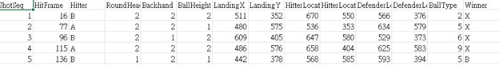

研究流程圖

指導教授：林建華、郭珈妤
團隊成員：黃聖筑、傅慧晴、涂冠樺、李祐宇、吳秉杰、劉恭哲、蔡易辰、邱瑛蓁
源於Github資料集，此資料集內容包含800筆來自各類羽球賽事的打擊至得分之片段影像及其觀測之各項數據。資料集內容包含mp4、csv兩類型檔案，影像部分截自羽球各賽事中選手從打擊到得分的片段內容，而csv的部分則包含擊球當下幀數(HitFrame)、雙方球員的站位(HitterL、DefenderL)、擊球種類(BallType)是否繞頭擊球(Backhand)等多項數據。
這樣的資料集不僅提供了視覺影像，還包括了豐富的數據，為進行羽球比賽的深入分析提供了豐富的資源。這使得使用者可以從不同角度更全面地理解每一場比賽的情境和關鍵因素。
靜宜大學資料科學暨大數據分析與應用學系2024羽球辨識系統專題網頁